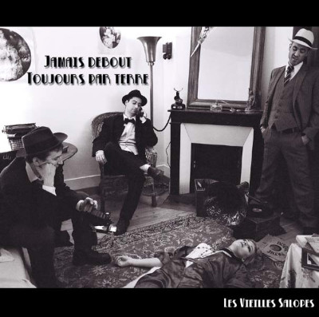
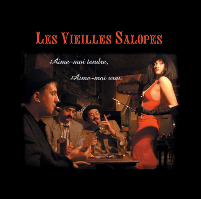
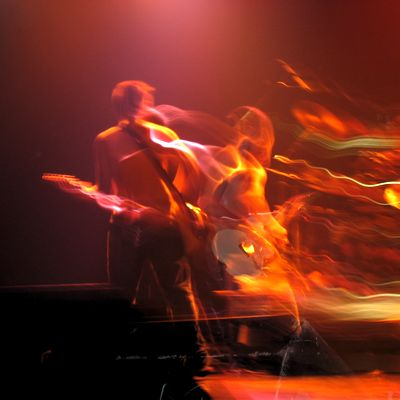
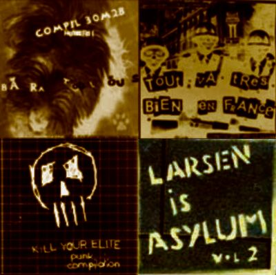
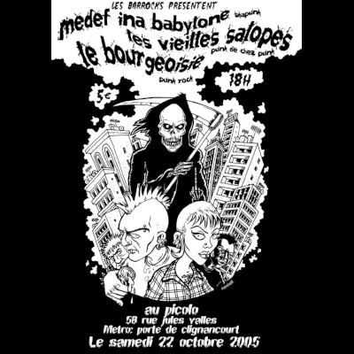

[2005]Jamais debout toujours par terre | Paroles | Télécharger | Commander

[2003]Aime-moi tendre, aime-moi vrai | Paroles | Télécharger

[2001 - 2006]15 reprises enregistrées en live | Télécharger

[2001 - 2006]Inédits, Reprises, Compils et Démos | Télécharger

[2001 - 2008]50 vidéos de concerts →La nuit avec vousle 26 oct. 2006 au Glazart - Paris
[2001 - 2008]Les dates de concerts →Au Picolo avec Medef Inna Babylone & Le Bourgeoisie
